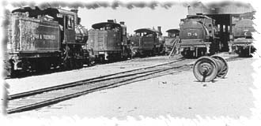

 The SDSoNS club has been using hand laid code 40 track and hand made turnouts
for over ten years. The club Track Standards set
out all the major details. Paramount is the use of the NMRA Gage,
which the club uses to set the correct distances for track gauge, flange and
point clearances. Rail is code 40 nickle silver from Micro Engineering. We use
1/32" x 1/16" basswood for the ties, and pc board ties of the same dimension from
Clover House. We use a wider pc tie for the point throwbar.
The SDSoNS club has been using hand laid code 40 track and hand made turnouts
for over ten years. The club Track Standards set
out all the major details. Paramount is the use of the NMRA Gage,
which the club uses to set the correct distances for track gauge, flange and
point clearances. Rail is code 40 nickle silver from Micro Engineering. We use
1/32" x 1/16" basswood for the ties, and pc board ties of the same dimension from
Clover House. We use a wider pc tie for the point throwbar.
 Russ Clover has always been very cordial and helpful whenever I talked with him.
He has a full catalog of detail parts like chain, barrels, tools, and a large
selection of dry transfer lettering for unusual cars such as the ATSF map
reefers (all variants), or a Pittsburgh, Shawmut & Northern reefer. Lots of
other 'billboard' reefers too, plus steam and diesel lettering, passenger car
lettering, a lot of turn of the century signs, and even car graffitti. You might
find his inexpensive catalog at a local hobby shop, or if not, he will send one.
Russ Clover has always been very cordial and helpful whenever I talked with him.
He has a full catalog of detail parts like chain, barrels, tools, and a large
selection of dry transfer lettering for unusual cars such as the ATSF map
reefers (all variants), or a Pittsburgh, Shawmut & Northern reefer. Lots of
other 'billboard' reefers too, plus steam and diesel lettering, passenger car
lettering, a lot of turn of the century signs, and even car graffitti. You might
find his inexpensive catalog at a local hobby shop, or if not, he will send one.
His address:
Russ Clover
Clover House
PO Box 62
Sebastopol, CA 95472
(707) 823-7301
 The club has run a variety of equipment on the layout over the years, and the
only equipment that has trouble is a few very old Rapido steamers from 8-9 years
back with very deep flanges. The use of soldered rail allows all newer flanges
to clear without the problems associated with code 40 flex track. The flex track
has cast in 'spikes' to hold the rail in place, and this is what the flanges are
hitting. We have no problems with the current equipment from Kato, Atlas, Life-Like,
Bachmann or brass imports; and including the Mikado from Kato and wheelsets
from Precision Masters, Intermountain, and others.
The club has run a variety of equipment on the layout over the years, and the
only equipment that has trouble is a few very old Rapido steamers from 8-9 years
back with very deep flanges. The use of soldered rail allows all newer flanges
to clear without the problems associated with code 40 flex track. The flex track
has cast in 'spikes' to hold the rail in place, and this is what the flanges are
hitting. We have no problems with the current equipment from Kato, Atlas, Life-Like,
Bachmann or brass imports; and including the Mikado from Kato and wheelsets
from Precision Masters, Intermountain, and others.
 What we have found is that many wheelsets from manufacturers like Intermountain
are gauged too narrow (and their flange thickness is overly wide). The best
working wheelsets are from Micro-Trains, both low profile and regular, and the low
profiles are our preferred wheelsets. The major caveat to smooth running and
trouble free operation is that all equipment must be in gauge to match the NMRA
Gage and wheels centered on the axles.
What we have found is that many wheelsets from manufacturers like Intermountain
are gauged too narrow (and their flange thickness is overly wide). The best
working wheelsets are from Micro-Trains, both low profile and regular, and the low
profiles are our preferred wheelsets. The major caveat to smooth running and
trouble free operation is that all equipment must be in gauge to match the NMRA
Gage and wheels centered on the axles.
 Until you gauge everything, you can't localize the other problems you may
be having, and may spend hours of frustration trying to figure out why that new
U50 keeps derailing, when a quick adjustment in wheel gauge would have solved it.
Until you gauge everything, you can't localize the other problems you may
be having, and may spend hours of frustration trying to figure out why that new
U50 keeps derailing, when a quick adjustment in wheel gauge would have solved it.
 Code 40 rail scales out as 120 pound prototype rail, and is acceptable for up to
150 lb rail (See Rail Sizes). Code 83 (Atlas, et
al) scales to over 13" high! Code 55 (8.8" high) is too large for the prototype,
but can be used for mainlines so you can use the code 40 for branch lines. The
difference in size gives the 'look' of lighter rail off the mains.
Code 40 rail scales out as 120 pound prototype rail, and is acceptable for up to
150 lb rail (See Rail Sizes). Code 83 (Atlas, et
al) scales to over 13" high! Code 55 (8.8" high) is too large for the prototype,
but can be used for mainlines so you can use the code 40 for branch lines. The
difference in size gives the 'look' of lighter rail off the mains.
 We are hand laying our 3ft narrow gauge track, keeping to the .25 width of Z gauge,
to match the flex track we are using in the hidden areas. Z gauge scales to 40", but
the 0.025in. over is very hard to see, so it still looks 'right' enough for the
flavor of narrow gauge.
We are hand laying our 3ft narrow gauge track, keeping to the .25 width of Z gauge,
to match the flex track we are using in the hidden areas. Z gauge scales to 40", but
the 0.025in. over is very hard to see, so it still looks 'right' enough for the
flavor of narrow gauge.
 While testing hand laying track for our narrow gauge line, I inadvertently
created a 5" radius curve coming out of a turnout. I was floored when all of my
narrow gauge equipment ran through without a problem.
While testing hand laying track for our narrow gauge line, I inadvertently
created a 5" radius curve coming out of a turnout. I was floored when all of my
narrow gauge equipment ran through without a problem.
 I just finished 8 turnouts for the Nn3 section of the layout, and once they are
installed, the 2.7 scale miles (89 feet) of narrow gauge track will soon follow.
I just finished 8 turnouts for the Nn3 section of the layout, and once they are
installed, the 2.7 scale miles (89 feet) of narrow gauge track will soon follow.
 John Stephens is one of the old hands at making turnouts, and his description of
constructing a turnout is as follows:
John Stephens is one of the old hands at making turnouts, and his description of
constructing a turnout is as follows:
 At SDSoNS we build about 95% of our turnouts in place after all ties
and ballast are in place.
At SDSoNS we build about 95% of our turnouts in place after all ties
and ballast are in place.
-- John Stephens --
Stuffit version for Mac:
Zipped version for Windows:  The template patterns presented here are the same ones we use at the SDSoNS to
lay out the tie patterns for all turnouts. the ties of the correct length are
assembled in a 'jig' that matches these templates. Once the ties are in the jig,
1/4" wide masking tape is used to keep them in place for transfer to the layout.
The template patterns presented here are the same ones we use at the SDSoNS to
lay out the tie patterns for all turnouts. the ties of the correct length are
assembled in a 'jig' that matches these templates. Once the ties are in the jig,
1/4" wide masking tape is used to keep them in place for transfer to the layout.
 To use these patterns without a jig, paste them on a flat surface, then get some
double sided clear tape and run a strip down the centerline of the rails. I have
also used spray adhesives that are sold in art supply stores or drafting supply
stores. Transfer the ties using 1/4" masking tape. You might have to de-stick
the double sided tape so it doesn't hold so strong by pressing on it with your
hand, or carefully pry off the ties from the template.
To use these patterns without a jig, paste them on a flat surface, then get some
double sided clear tape and run a strip down the centerline of the rails. I have
also used spray adhesives that are sold in art supply stores or drafting supply
stores. Transfer the ties using 1/4" masking tape. You might have to de-stick
the double sided tape so it doesn't hold so strong by pressing on it with your
hand, or carefully pry off the ties from the template.
 If you prefer to roll your own turnout - curved, wye, three-way, etc. then try using David Honner's excellent Excel spreadsheet combined with your favorite CAD program or design software such as CadRail or 3rdPlanit:
If you prefer to roll your own turnout - curved, wye, three-way, etc. then try using David Honner's excellent Excel spreadsheet combined with your favorite CAD program or design software such as CadRail or 3rdPlanit:
Turnout_Calculator.sit
Turnout_Calculator.zip
If you have comments, suggestions on what you would like to see
or data you might like, you can email me at:
Rick Blanchard - rick@urbaneagle.com


--Back to da data.--